hoje é o nosso primeiro Dia dos Namorados juntos — e eu quis te escrever tudo o que sinto.
Hoje é o nosso primeiro Dia dos Namorados juntos. E, enquanto penso em tudo o que vivemos até aqui, percebo que a melhor parte da nossa história não são os grandes momentos. São os detalhes.
São as conversas que começaram despretensiosas e, sem que eu percebesse, passaram a fazer parte dos meus dias. São as mensagens de bom dia, os “dorme com Deus?”, os “Deeeeer”, os beijos cobrados antes de dormir e as pequenas broncas quando eu demorava para responder.
Eu me apaixonei por você nos detalhes.
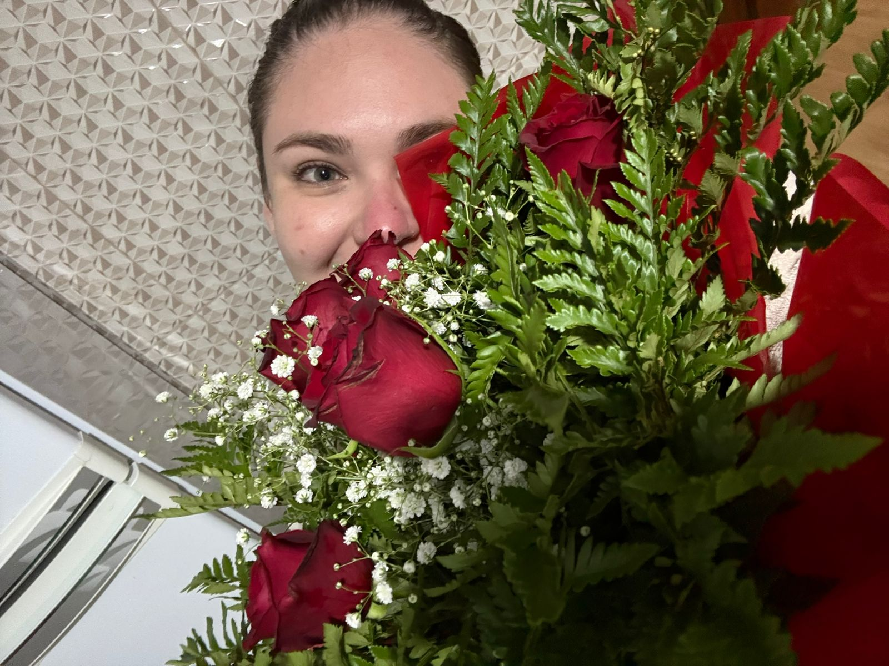
Me apaixonei pela professora que fala dos seus alunos com brilho nos olhos. Pela mulher que se preocupa com as pessoas, que sofre quando alguém está passando por dor, que se apega às crianças e às pessoas que Deus coloca em seu caminho.
Pela forma como você se emociona. Pela forma como sente saudade. Pela forma como se importa. E é exatamente isso que mais admiro em você: o tamanho do seu coração.
Ao longo desses meses, fui conhecendo cada pedacinho de quem você é. Descobri a mulher que ama sua família, que fala dos pais com orgulho, que construiu valores lindos e que carrega uma fé que inspira quem está ao seu lado.
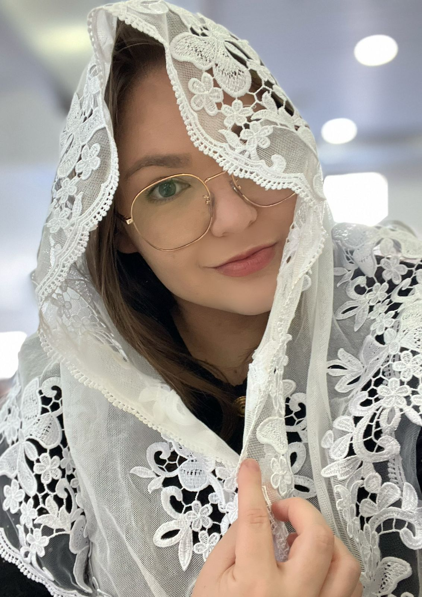
Descobri também a mulher que diz não gostar de surpresas, mas que fica curiosa até não aguentar mais. A mulher que reclama quando eu sou 'seco'. Que me chama de “amor”, “neném”, “mozinho” e, de vez em quando, de “momô”.
E, sinceramente? Eu não trocaria isso por nada.
E, sem perceber, foi ocupando um espaço que hoje não consigo imaginar vazio.
Gosto de pensar em todas as conversas que tivemos sobre o futuro:
No fundo, todas essas conversas tinham algo em comum: elas já falavam de “nós”. E eu amo isso. Amo porque, mesmo quando tudo ainda era incerto, já existia uma sensação muito forte dentro de mim de que você era alguém diferente.
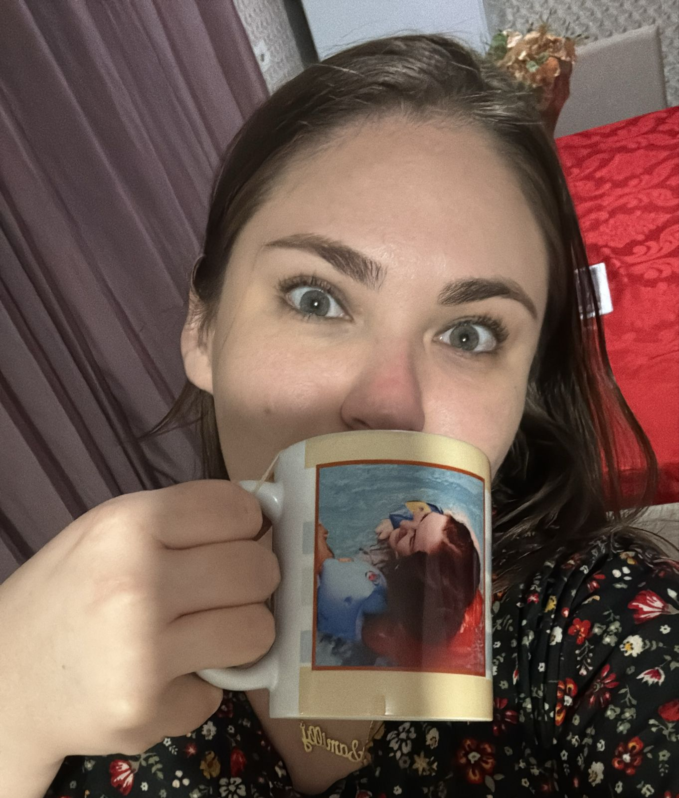
Você me ensinou que algumas pessoas chegam na nossa vida de uma forma tão natural que parece que sempre estiveram ali. Como se Deus, lá atrás, já estivesse preparando os nossos caminhos para que eles se cruzassem no momento certo.
E quando olho para você hoje, é exatamente isso que sinto: gratidão.
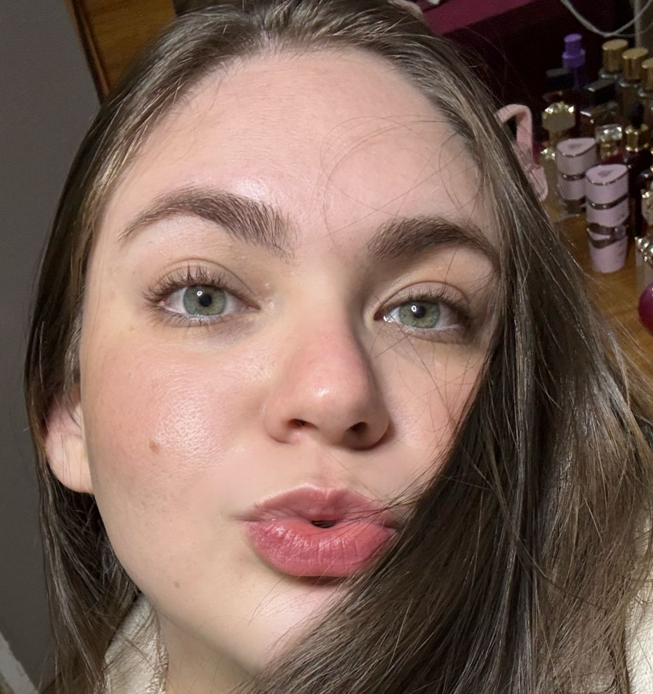
Neste nosso primeiro Dia dos Namorados, quero que você saiba que é muito especial para mim. Mais do que talvez consiga colocar em palavras.
Quero continuar conhecendo seus sonhos, ouvindo suas histórias, celebrando suas conquistas, segurando sua mão nos dias difíceis e construindo memórias ao seu lado. Quero continuar sendo alguém que te faz sentir amada, segura e valorizada.
Porque, entre todas as coisas bonitas que aconteceram na minha vida este ano, você foi a mais bonita delas.
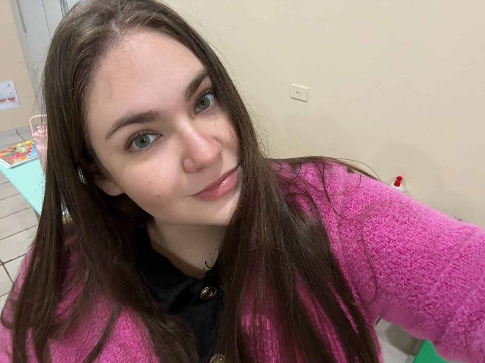
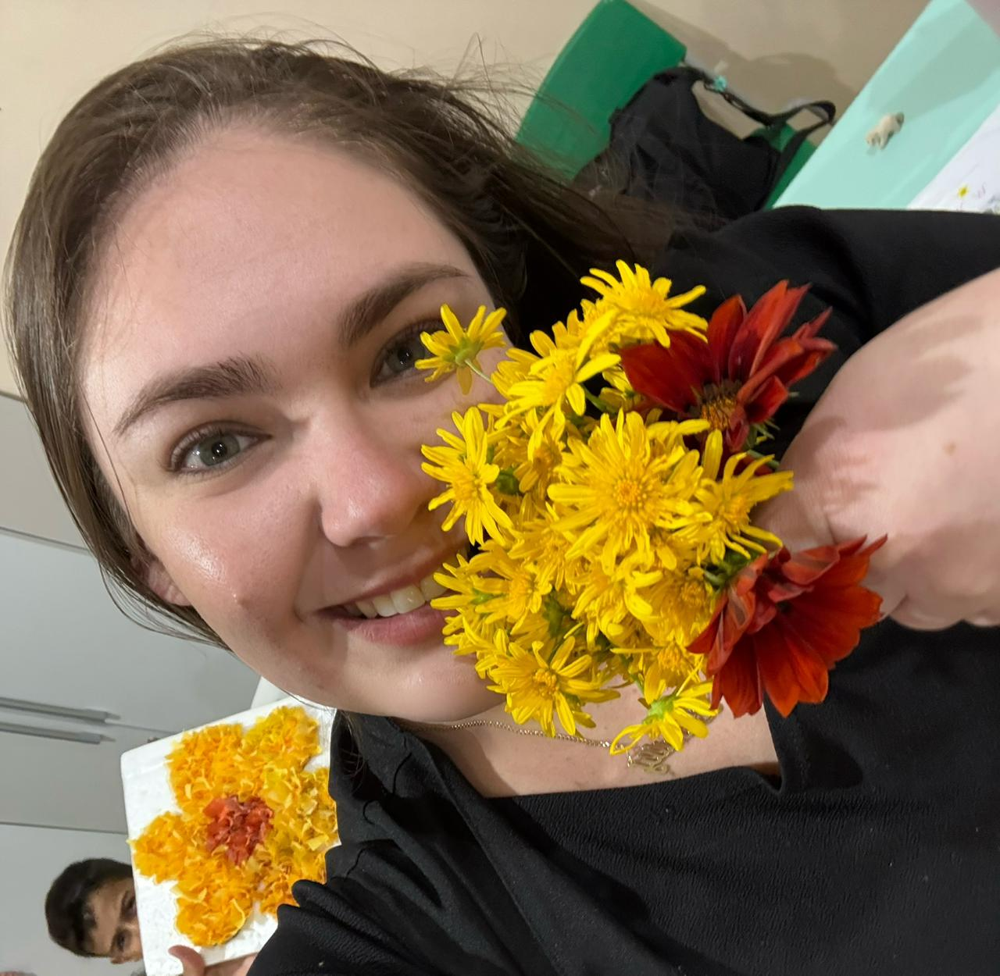
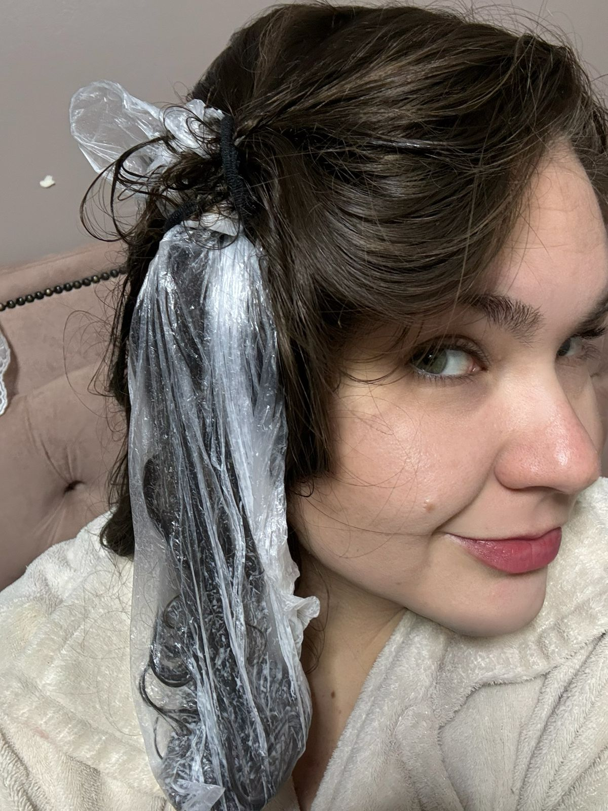
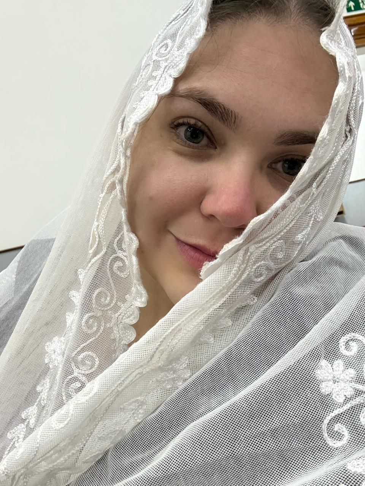
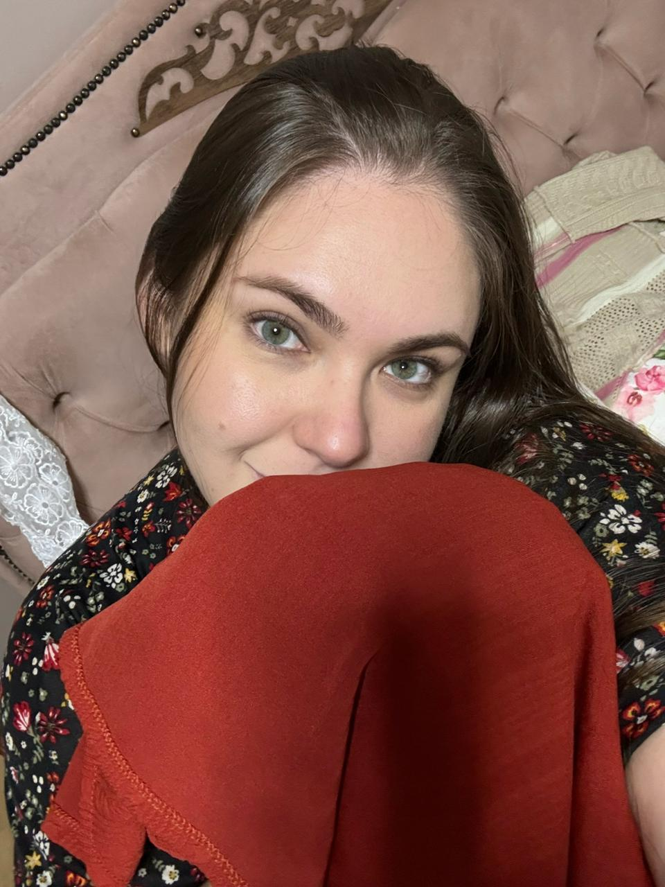
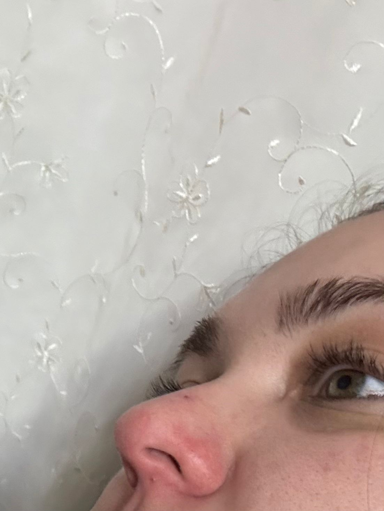
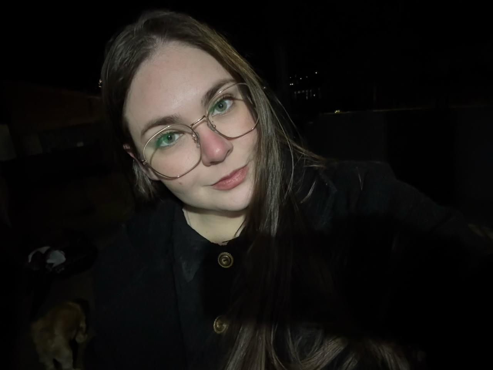
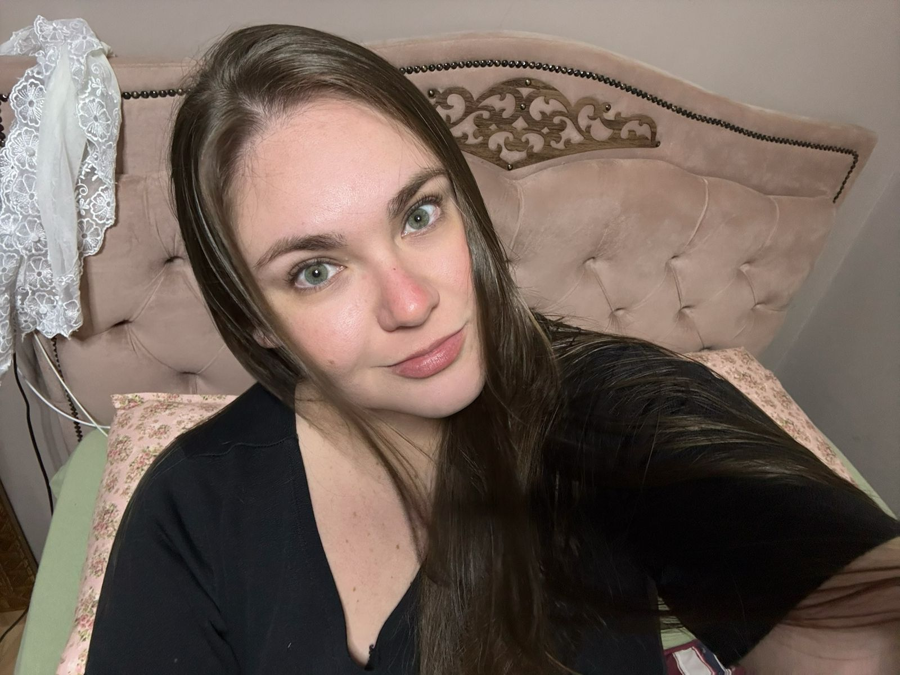
Feliz Dia dos Namorados, meu amor.
Que este seja apenas o primeiro de muitos.